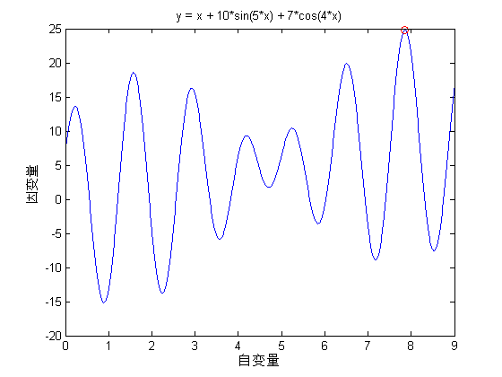
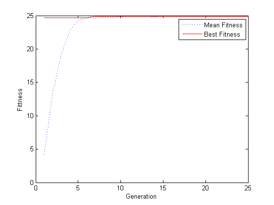

Contents
I. 清空环境变量
clear all
clc
II. 绘制函数曲线
x = 0:0.01:9;
y = x + 10*sin(5*x)+7*cos(4*x);
figure
plot(x, y)
xlabel('自变量')
ylabel('因变量')
title('y = x + 10*sin(5*x) + 7*cos(4*x)')
III. 初始化种群
initPop = initializega(50,[0 9],'fitness');
IV. 遗传算法优化
[x endPop bpop trace] = ga([0 9],'fitness',[],initPop,[1e-6 1 1],'maxGenTerm',25,...
'normGeomSelect',0.08,'arithXover',2,'nonUnifMutation',[2 25 3]);
1 24.694704
2 3 4 5 6
7 24.855339
8 9 10 11 12 13 14 15 16 17 18 19 20 21
22 24.855362
23 24
25 24.855363
V. 输出最优解并绘制最优点
x
hold on
plot (endPop(:,1),endPop(:,2),'ro')
x =
7.8568 24.8554

VI. 绘制迭代进化曲线
figure(2)
plot(trace(:,1),trace(:,3),'b:')
hold on
plot(trace(:,1),trace(:,2),'r-')
xlabel('Generation'); ylabel('Fittness');
legend('Mean Fitness', 'Best Fitness')
